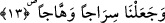

12. Üstünüzde yedi kat sağlam göğü bina ettik.
“Sağlam” diye ifâde ettiğimiz “şidâd”, “şedîd” kelimesinin çoğuludur. Yâni yaratılışı
dayanıklı, binâsı sağlam, üzerinden asırların geçmesinin kendisine etki edemediği yedi
kat gökyüzünü binâ ettik.
Ebu’l-Leys, “şidâden” kelimesini “kalınlık” diye tefsir eder. Her bir göğün kalınlığı
beşyüz senelik yoldur. Göğün yaratılışının “binâ” kelimesiyle ifâde edilmesi, onun
yaratıklar üzerine konulmuş kubbeler mesâbesinde binâ edilmesinden dolayıdır.
Bu âyet-i kerîmede kalbin yedi tabakasına işâret vardır. Bu tabakaları şöylece
sıralayabiliriz:
1. Sudur tabakası: İslâm cevherinin kaynağı olan tabaka,
2. Kalp tabakası: Îman cevherinin bulunduğu tabaka,
3. Şiğaf tabakası: Aşk, muhabbet ve şefkatın yeraldığı tabaka,
4. Fuad tabakası: Mükâşefe, müşâhede ve rü’yetin bulunduğu tabaka.
5. Habbetu’l-kalb tabakası: Allah muhabbetine tahsis edilmiş tabaka. Kevneyn
muhabbeti ve âlemeyn aşkına yer yoktur.
6. Suveydâ tabakası: Ledunnî ilmin kaynağı beytü’l-hikmedir.
7. Beytu’l-izzet tabakası: Ekmel insanlar kalb tabakasıdır. Hiçbir zaman bâtından
zâhire çıkmaz yansırlar bulunur.
13. (Orada) alev alev yanan bir kandil yarattık.
Bu kandil güneştir. Güneşin “sirac” kelimesiyle ifâde olunması, göklerin yaratılışının
“binâ” fiili ile ifâde edilmesi gibidir. Râğıb Isfahânî’nin ifâdesine göre “sirac”, fitil ve
yağ ile parlayan kandilin adıdır. Işık veren her şey bu şekilde ifâde olunur. “Sirac”a
“misbah” da denilir.
“Vehhâc” kelimesi “veheceti’n-nar/ateş aydınlattı” ifâdesinden türemekte olup
“tutuşup parlayan, ışık veren şey” demektir. Veya “vehc/ateşin harâreti” kelimesinden
türemekte olup “harâreti yüksek olan ateş” anlamınadır.
Denildiğine göre; güneş ve ay arşın nurundan yaratılmışlardır. Bu iki ışık kaynağı,
kıyâmet günü tekrar arşın nuruna geri döneceklerdir.
İkrime’nin rivâyetine göre İbn Abbas (r.a.) yanında bulunanlara: “Size Peygamber
Efendimiz’den güneş ve ayın ilk yaratılışlarına ve âkıbetlerine dâir duymuş olduğum bir
hadis-i şerifi aktarayım mı?” dedi. Onlar da “evet, Allah sana merhamet eylesin”
dediklerinde İbn Abbas dedi ki: Peygamberimiz (s.a.)’e bu soru sorulunca şöyle
buyurdu: “Allah Teâlâ yaratmasını bir programa bağlayıp da Âdem’den başka
yaratacağı hiçbir nesne kalmayınca kendi arşında iki güneş yarattı.
İlm-i ezelisinde güneş olarak bırakacak olduğunu tıpkı dünya gibi doğusu ve batısı